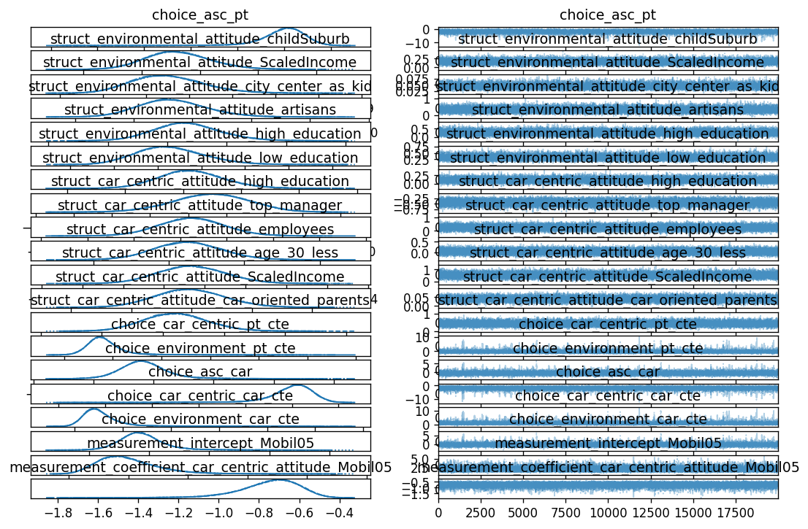
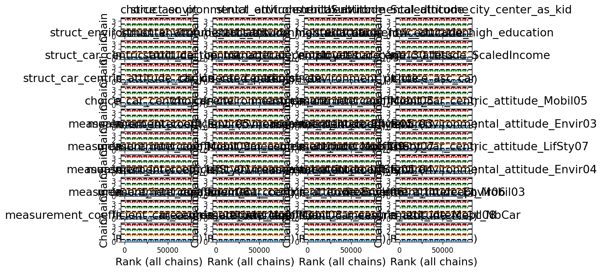
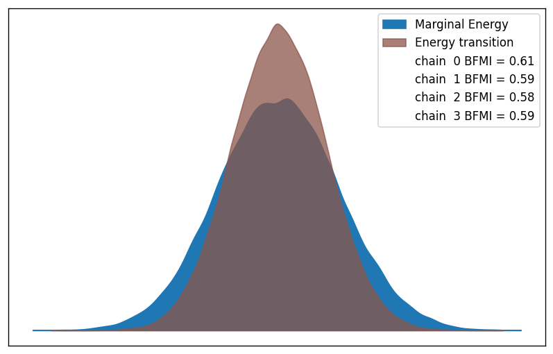
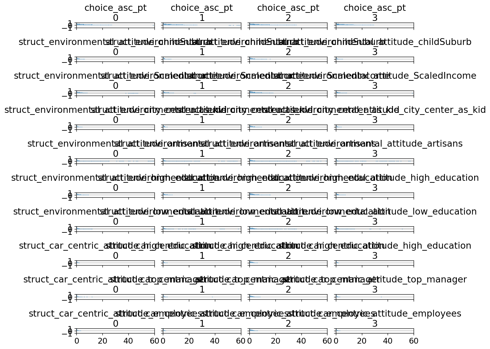

biogeme 3.3.2 [2025-12-24]
Python package
Home page: http://biogeme.epfl.ch
Submit questions to https://groups.google.com/d/forum/biogeme
Michel Bierlaire, Transport and Mobility Laboratory, Ecole Polytechnique Fédérale de Lausanne (EPFL)
This file has automatically been generated on 2025-12-24 22:17:30.470996
| Bayesian estimation report file: | b06_hybrid_bayes.html |
| Database name: | optima.dat |
| Sample size: | 896 |
| Sampler: | NUTS |
| Number of chains: | 4 |
| Number of draws per chain: | 20000 |
| Total number of draws: | 80000 |
| Acceptance rate target: | 0.9 |
| Run time: | 4:17:39.810887 |
| Posterior predictive log-likelihood (sum of log mean p): | -16196.80 |
| Expected log-likelihood E[log L(Y|θ)]: | -16503.16 |
| Best-draw log-likelihood (posterior upper bound): | -16361.16 |
| WAIC (Widely Applicable Information Criterion): | -17080.21 |
| WAIC Standard Error: | 134.87 |
| Effective number of parameters (p_WAIC): | 883.41 |
| LOO (Leave-One-Out Cross-Validation): | -17452.85 |
| LOO Standard Error: | 135.73 |
| Effective number of parameters (p_LOO): | 1256.06 |
| Id | Name | Value (mean) | Value (median) | Value (mode) | std err. | z-value | p-value | HDI low | HDI high | R hat | ESS (bulk) | ESS (tail) |
|---|---|---|---|---|---|---|---|---|---|---|---|---|
| 55 | beta_time_car_lambda_car_centric | -1.41 | -1.39 | -1.35 | 0.233 | -6.06 | 0 | -1.85 | -0.988 | 1 | 7.97e+03 | 9.36e+03 |
| 54 | beta_time_car_lambda_environment | -0.719 | -0.699 | -0.665 | 0.271 | -2.65 | 0 | -1.24 | -0.228 | 1 | 1.57e+04 | 2.25e+04 |
| 50 | beta_time_pt_lambda_car_centric | -1.16 | -1.14 | -1.12 | 0.203 | -5.7 | 0 | -1.55 | -0.797 | 1 | 8.21e+03 | 9.06e+03 |
| 48 | beta_time_pt_lambda_environment | -0.611 | -0.594 | -0.55 | 0.236 | -2.59 | 0 | -1.06 | -0.181 | 1 | 1.7e+04 | 2.45e+04 |
| 70 | cars_delta_1 | 2.08 | 2.07 | 2.06 | 0.131 | 15.8 | 0 | 1.83 | 2.32 | 1 | 4.6e+04 | 5.74e+04 |
| 71 | cars_delta_2 | 1.96 | 1.96 | 1.95 | 0.126 | 15.5 | 0 | 1.73 | 2.2 | 1 | 5.69e+04 | 5.75e+04 |
| 15 | choice_asc_car | -2.09 | -1.91 | -1.75 | 1.1 | -1.9 | 0.00363 | -3.9 | -0.373 | 1 | 7.29e+03 | 3.67e+03 |
| 0 | choice_asc_pt | -2.08 | -1.94 | -1.85 | 1.08 | -1.93 | 0.00732 | -3.88 | -0.291 | 1 | 7.5e+03 | 3.74e+03 |
| 52 | choice_beta_cost | -0.109 | -0.108 | -0.109 | 0.0185 | -5.88 | 0 | -0.144 | -0.075 | 1 | 5.48e+04 | 5.67e+04 |
| 57 | choice_beta_dist_other_purposes | -1.03 | -0.98 | -0.934 | 0.282 | -3.65 | 0 | -1.47 | -0.616 | 1 | 7.64e+03 | 4e+03 |
| 56 | choice_beta_dist_work | -0.669 | -0.64 | -0.612 | 0.177 | -3.77 | 0 | -0.936 | -0.405 | 1 | 7.96e+03 | 3.96e+03 |
| 53 | choice_beta_time_car_ref | -5.97 | -5.84 | -5.55 | 1.5 | -3.99 | 0 | -8.77 | -3.28 | 1 | 1.73e+04 | 3.13e+04 |
| 47 | choice_beta_time_pt_ref | -2.54 | -2.5 | -2.44 | 0.598 | -4.25 | 0 | -3.68 | -1.46 | 1 | 1.88e+04 | 3.5e+04 |
| 16 | choice_car_centric_car_cte | 1.13 | 0.936 | 0.784 | 0.965 | 1.17 | 0.0495 | -0.191 | 2.62 | 1 | 7.52e+03 | 3.64e+03 |
| 13 | choice_car_centric_pt_cte | -0.306 | -0.445 | -0.541 | 0.89 | -0.343 | 0.484 | -1.67 | 1.07 | 1 | 8.36e+03 | 3.75e+03 |
| 17 | choice_environment_car_cte | -0.246 | -0.319 | -0.405 | 0.804 | -0.306 | 0.632 | -1.69 | 1.2 | 1 | 9.21e+03 | 4.75e+03 |
| 14 | choice_environment_pt_cte | -0.319 | -0.377 | -0.466 | 0.826 | -0.386 | 0.597 | -1.8 | 1.23 | 1 | 9.74e+03 | 5.33e+03 |
| 59 | likert_delta_0 | 0.136 | 0.135 | 0.133 | 0.0193 | 7.05 | 0 | 0.1 | 0.173 | 1 | 8.86e+03 | 2.16e+04 |
| 60 | likert_delta_1 | 0.686 | 0.683 | 0.682 | 0.081 | 8.47 | 0 | 0.534 | 0.837 | 1 | 5.64e+03 | 1.22e+04 |
| 73 | measurement_Envir02_sigma | 0.673 | 0.668 | 0.664 | 0.0908 | 7.41 | 0 | 0.507 | 0.844 | 1 | 6.27e+03 | 1.34e+04 |
| 62 | measurement_Envir03_sigma | 1.39 | 1.36 | 1.33 | 0.247 | 5.63 | 0 | 0.953 | 1.86 | 1 | 1.02e+04 | 2.26e+04 |
| 66 | measurement_Envir04_sigma | 0.737 | 0.731 | 0.734 | 0.104 | 7.08 | 0 | 0.548 | 0.936 | 1 | 7.24e+03 | 1.67e+04 |
| 61 | measurement_Envir05_sigma | 0.73 | 0.723 | 0.707 | 0.111 | 6.61 | 0 | 0.527 | 0.938 | 1 | 7.63e+03 | 1.72e+04 |
| 67 | measurement_Envir06_sigma | 0.425 | 0.421 | 0.415 | 0.0632 | 6.72 | 0 | 0.307 | 0.542 | 1 | 6.83e+03 | 1.51e+04 |
| 65 | measurement_LifSty01_sigma | 1.06 | 1.05 | 1.04 | 0.156 | 6.8 | 0 | 0.779 | 1.36 | 1 | 8.19e+03 | 1.89e+04 |
| 64 | measurement_LifSty07_sigma | 1.74 | 1.69 | 1.61 | 0.369 | 4.71 | 0 | 1.12 | 2.43 | 1 | 1.33e+04 | 2.84e+04 |
| 68 | measurement_Mobil03_sigma | 1.23 | 1.21 | 1.18 | 0.207 | 5.96 | 0 | 0.857 | 1.62 | 1 | 9.16e+03 | 2.14e+04 |
| 58 | measurement_Mobil05_sigma | 1.87 | 1.81 | 1.72 | 0.413 | 4.53 | 0 | 1.19 | 2.65 | 1 | 1.25e+04 | 2.65e+04 |
| 69 | measurement_Mobil08_sigma | 2.18 | 2.08 | 1.92 | 0.554 | 3.93 | 0 | 1.31 | 3.19 | 1 | 1.57e+04 | 2.44e+04 |
| 63 | measurement_Mobil09_sigma | 0.937 | 0.928 | 0.924 | 0.142 | 6.61 | 0 | 0.688 | 1.21 | 1 | 8.14e+03 | 1.79e+04 |
| 74 | measurement_Mobil10_sigma | 5.82 | 5.48 | 4.73 | 2.18 | 2.67 | 0 | 2.3 | 9.88 | 1 | 2.83e+04 | 3.85e+04 |
| 72 | measurement_Mobil12_sigma | 5.77 | 5.39 | 4.5 | 2.17 | 2.66 | 0 | 2.35 | 9.84 | 1 | 2.89e+04 | 3.73e+04 |
| 43 | measurement_coefficient_car_centric_attitude_Envir02 | -0.216 | -0.216 | -0.215 | 0.0384 | -5.62 | 0 | -0.288 | -0.144 | 1 | 2.91e+04 | 4.57e+04 |
| 33 | measurement_coefficient_car_centric_attitude_Envir06 | -0.0939 | -0.0931 | -0.0916 | 0.0283 | -3.31 | 0.000525 | -0.148 | -0.0418 | 1 | 2.85e+04 | 4.83e+04 |
| 27 | measurement_coefficient_car_centric_attitude_LifSty07 | 0.0927 | 0.0905 | 0.0775 | 0.0782 | 1.19 | 0.216 | -0.052 | 0.242 | 1 | 6.43e+04 | 5.34e+04 |
| 36 | measurement_coefficient_car_centric_attitude_Mobil03 | -0.39 | -0.385 | -0.376 | 0.0685 | -5.69 | 0 | -0.518 | -0.264 | 1 | 3.19e+04 | 4.45e+04 |
| 19 | measurement_coefficient_car_centric_attitude_Mobil05 | -0.747 | -0.729 | -0.698 | 0.148 | -5.05 | 0 | -1.03 | -0.496 | 1 | 2.84e+04 | 3.29e+04 |
| 38 | measurement_coefficient_car_centric_attitude_Mobil08 | 0.417 | 0.403 | 0.381 | 0.128 | 3.27 | 2.5e-05 | 0.189 | 0.649 | 1 | 3.96e+04 | 3.47e+04 |
| 25 | measurement_coefficient_car_centric_attitude_Mobil09 | -0.386 | -0.383 | -0.376 | 0.0558 | -6.91 | 0 | -0.492 | -0.285 | 1 | 2.81e+04 | 4.57e+04 |
| 45 | measurement_coefficient_car_centric_attitude_Mobil10 | 3.2 | 2.99 | 2.62 | 1.16 | 2.77 | 0 | 1.34 | 5.34 | 1 | 3.35e+04 | 3.7e+04 |
| 40 | measurement_coefficient_car_centric_attitude_NbCar | 0.686 | 0.68 | 0.664 | 0.0963 | 7.12 | 0 | 0.513 | 0.871 | 1 | 1.24e+04 | 2.58e+04 |
| 46 | measurement_coefficient_environmental_attitude_Envir01 | 1.1 | 1.09 | 1.07 | 0.15 | 7.29 | 0 | 0.817 | 1.38 | 1 | 9.69e+03 | 2.09e+04 |
| 23 | measurement_coefficient_environmental_attitude_Envir03 | -1.08 | -1.06 | -1.03 | 0.16 | -6.75 | 0 | -1.38 | -0.793 | 1 | 4.74e+04 | 4.24e+04 |
| 31 | measurement_coefficient_environmental_attitude_Envir04 | -0.67 | -0.667 | -0.659 | 0.0746 | -8.98 | 0 | -0.811 | -0.532 | 1 | 3.82e+04 | 4.99e+04 |
| 21 | measurement_coefficient_environmental_attitude_Envir05 | 0.991 | 0.987 | 0.97 | 0.0957 | 10.4 | 0 | 0.813 | 1.17 | 1 | 3.71e+04 | 4.98e+04 |
| 34 | measurement_coefficient_environmental_attitude_Envir06 | 0.787 | 0.785 | 0.785 | 0.0706 | 11.2 | 0 | 0.659 | 0.922 | 1 | 3.02e+04 | 4.6e+04 |
| 29 | measurement_coefficient_environmental_attitude_LifSty01 | 0.326 | 0.323 | 0.322 | 0.0791 | 4.12 | 0 | 0.18 | 0.476 | 1 | 6.73e+04 | 5.59e+04 |
| 42 | measurement_coefficient_environmental_attitude_Mobil12 | -4.04 | -3.77 | -3.25 | 1.5 | -2.7 | 0 | -6.83 | -1.71 | 1 | 3.26e+04 | 3.17e+04 |
| 22 | measurement_intercept_Envir03 | 1.4 | 1.37 | 1.3 | 0.285 | 4.93 | 0 | 0.908 | 1.94 | 1 | 1.17e+04 | 2.48e+04 |
| 30 | measurement_intercept_Envir04 | 0.39 | 0.383 | 0.37 | 0.0832 | 4.68 | 0 | 0.236 | 0.544 | 1 | 1.36e+04 | 2.72e+04 |
| 20 | measurement_intercept_Envir05 | 0.278 | 0.271 | 0.265 | 0.104 | 2.67 | 0.0019 | 0.0893 | 0.478 | 1 | 1.97e+04 | 3.41e+04 |
| 32 | measurement_intercept_Envir06 | 0.623 | 0.614 | 0.599 | 0.114 | 5.47 | 0 | 0.418 | 0.839 | 1 | 8.02e+03 | 1.91e+04 |
| 28 | measurement_intercept_LifSty01 | 0.141 | 0.136 | 0.13 | 0.0903 | 1.57 | 0.0885 | -0.0235 | 0.313 | 1 | 5.87e+04 | 4.64e+04 |
| 26 | measurement_intercept_LifSty07 | -0.0854 | -0.0973 | -0.112 | 0.114 | -0.75 | 0.39 | -0.289 | 0.13 | 1 | 5.41e+04 | 3.86e+04 |
| 35 | measurement_intercept_Mobil03 | 1.1 | 1.07 | 1.01 | 0.226 | 4.85 | 0 | 0.698 | 1.52 | 1 | 1.01e+04 | 2.32e+04 |
| 18 | measurement_intercept_Mobil05 | 2 | 1.92 | 1.83 | 0.511 | 3.9 | 0 | 1.14 | 2.95 | 1 | 1.22e+04 | 2.63e+04 |
| 37 | measurement_intercept_Mobil08 | 0.186 | 0.154 | 0.108 | 0.198 | 0.937 | 0.276 | -0.142 | 0.544 | 1 | 4.44e+04 | 2.88e+04 |
| 24 | measurement_intercept_Mobil09 | 1.63 | 1.61 | 1.6 | 0.265 | 6.14 | 0 | 1.14 | 2.13 | 1 | 7.71e+03 | 1.66e+04 |
| 44 | measurement_intercept_Mobil10 | 3.39 | 3.14 | 2.51 | 1.49 | 2.28 | 0 | 1.03 | 6.19 | 1 | 3.17e+04 | 3.82e+04 |
| 41 | measurement_intercept_Mobil12 | 2.04 | 1.87 | 1.45 | 0.995 | 2.05 | 0 | 0.472 | 3.89 | 1 | 3.24e+04 | 3.36e+04 |
| 39 | measurement_intercept_NbCar | 1.87 | 1.87 | 1.86 | 0.116 | 16.1 | 0 | 1.65 | 2.09 | 1 | 2.43e+04 | 4.35e+04 |
| 11 | struct_car_centric_attitude_ScaledIncome | 0.0395 | 0.0393 | 0.0395 | 0.0115 | 3.43 | 0.0003 | 0.0181 | 0.0614 | 1 | 1.27e+04 | 2.72e+04 |
| 10 | struct_car_centric_attitude_age_30_less | 0.537 | 0.533 | 0.524 | 0.166 | 3.24 | 0.0008 | 0.238 | 0.86 | 1 | 3.24e+04 | 4.68e+04 |
| 12 | struct_car_centric_attitude_car_oriented_parents | 0.441 | 0.439 | 0.439 | 0.104 | 4.22 | 0 | 0.247 | 0.639 | 1 | 1.99e+04 | 3.51e+04 |
| 9 | struct_car_centric_attitude_employees | 0.0495 | 0.0479 | 0.0442 | 0.0892 | 0.555 | 0.586 | -0.112 | 0.224 | 1 | 2.15e+04 | 3.83e+04 |
| 7 | struct_car_centric_attitude_high_education | -0.441 | -0.439 | -0.438 | 0.101 | -4.38 | 0 | -0.628 | -0.251 | 1 | 2.55e+04 | 4.09e+04 |
| 51 | struct_car_centric_attitude_sigma | 0.981 | 0.978 | 0.972 | 0.089 | 11 | 0 | 0.812 | 1.15 | 1 | 7.34e+03 | 1.66e+04 |
| 8 | struct_car_centric_attitude_top_manager | 0.249 | 0.248 | 0.244 | 0.141 | 1.76 | 0.0775 | -0.0244 | 0.508 | 1 | 3.44e+04 | 4.76e+04 |
| 2 | struct_environmental_attitude_ScaledIncome | 0.0451 | 0.0446 | 0.0436 | 0.00826 | 5.46 | 0 | 0.0302 | 0.0608 | 1 | 8.72e+03 | 1.88e+04 |
| 4 | struct_environmental_attitude_artisans | 0.268 | 0.263 | 0.258 | 0.112 | 2.39 | 0.0114 | 0.0655 | 0.487 | 1 | 2.55e+04 | 3.54e+04 |
| 1 | struct_environmental_attitude_childSuburb | 0.163 | 0.16 | 0.153 | 0.0552 | 2.95 | 0.00085 | 0.0625 | 0.269 | 1 | 1.86e+04 | 3.08e+04 |
| 3 | struct_environmental_attitude_city_center_as_kid | 0.332 | 0.326 | 0.313 | 0.116 | 2.86 | 0.00182 | 0.11 | 0.547 | 1 | 2e+04 | 3.26e+04 |
| 5 | struct_environmental_attitude_high_education | 0.329 | 0.324 | 0.31 | 0.0785 | 4.2 | 0 | 0.188 | 0.48 | 1 | 1.28e+04 | 2.53e+04 |
| 6 | struct_environmental_attitude_low_education | 0.114 | 0.112 | 0.107 | 0.0562 | 2.04 | 0.0328 | 0.0121 | 0.224 | 1 | 2.15e+04 | 3.21e+04 |
| 49 | struct_environmental_attitude_sigma | 0.578 | 0.574 | 0.566 | 0.0833 | 6.94 | 0 | 0.421 | 0.733 | 1 | 6.33e+03 | 1.3e+04 |
| Name: | Identifier of the model parameter being estimated. |
| Value: | Posterior mean (expected value) of the parameter. |
| Median: | Posterior median (50% quantile) of the parameter. |
| Mode: | Posterior mode (most frequent value) of the parameter |
| Std err.: | Posterior standard deviation, measuring uncertainty around the mean. |
| z-value: | Standardized estimate (mean divided by std. dev.), indicating signal-to-noise ratio. |
| p-value: | Two-sided Bayesian tail probability that the parameter differs in sign from zero. |
| HDI low / HDI high: | Lower and upper bounds of the Highest Density Interval containing the most probable parameter values. |
| R-hat (Gelman–Rubin): | Convergence diagnostic; values very close to 1 (typically ≤ 1.01) indicate well-mixed chains. |
| ESS (bulk): | Effective sample size for the central part of the posterior; values above ~400 are generally considered sufficient. |
| ESS (tail): | Effective sample size for the posterior tails; values above ~100 ensure reliable estimates of extreme quantiles. |
This section reports quick numerical checks for non-identification or weak identification. Intuitively, identification problems mean that some combinations of parameters can change without changing the likelihood much, so the posterior is very wide (or nearly flat) in some directions. These checks use the posterior draws (and the prior draws, if available).
max_eigenvalue together with a large condition number. If reported, the max_eigenvector_top loadings indicate which parameters contribute most to that weakly identified linear combination.n_parameters). If it is much smaller than n_parameters, the posterior variability concentrates in a lower-dimensional subspace, consistent with (near) linear dependencies among parameters.std_ratio_post_over_prior ≈ 1 means the data did not shrink uncertainty much (likelihood weakly informative for that parameter). A ratio well below 1 (say 0.1 or 0.01) means the likelihood is informative for that parameter.Flags: Weak-identification direction detected from the posterior covariance (largest posterior variance direction). This suggests a linear combination of parameters that remains weakly constrained. Top loadings: -0.768·measurement_Mobil10_sigma + -0.507·measurement_intercept_Mobil10 + -0.385·measurement_coefficient_car_centric_attitude_Mobil10 + -0.0298·measurement_Mobil12_sigma + -0.0257·choice_asc_pt + +0.0241·choice_beta_time_car_ref + +0.0222·choice_car_centric_car_cte + -0.0216·choice_asc_car
| n_parameters: | 75 |
| n_draws: | 80000 |
| min_eigenvalue: | 5.87e-06 |
| max_eigenvalue: | 7.95 |
| condition_number: | 1.35e+06 |
| effective_rank: | 6.99 |
| min_eigenvalue_ratio: | 7.38e-07 |
| n_parameters: | 75 |
| n_draws: | 20000 |
| min_eigenvalue: | 8.03 |
| max_eigenvalue: | 27.2 |
| condition_number: | 3.39 |
| effective_rank: | 69.1 |
| min_eigenvalue_ratio: | 0.295 |
The table below compares posterior and prior standard deviations when prior draws are available. A ratio close to 1 suggests the prior dominates; a ratio well below 1 suggests the data are informative.
| name | posterior_std | prior_std | std_ratio_post_over_prior | |
|---|---|---|---|---|
| 0 | choice_asc_pt | 1.075698 | 5.019762 | 0.214293 |
| 1 | choice_beta_time_pt_ref | 0.598007 | 3.018001 | 0.198147 |
| 2 | beta_time_pt_lambda_environment | 0.236174 | 3.198516 | 0.073838 |
| 3 | struct_environmental_attitude_childSuburb | 0.055176 | 5.023348 | 0.010984 |
| 4 | struct_environmental_attitude_ScaledIncome | 0.008260 | 4.984140 | 0.001657 |
| 5 | struct_environmental_attitude_city_center_as_kid | 0.116273 | 4.966921 | 0.023409 |
| 6 | struct_environmental_attitude_artisans | 0.111694 | 5.014814 | 0.022273 |
| 7 | struct_environmental_attitude_high_education | 0.078476 | 4.995100 | 0.015711 |
| 8 | struct_environmental_attitude_low_education | 0.056192 | 5.038839 | 0.011152 |
| 9 | struct_environmental_attitude_sigma | 0.083291 | 3.186423 | 0.026139 |
| 10 | beta_time_pt_lambda_car_centric | 0.202840 | 3.167513 | 0.064038 |
| 11 | struct_car_centric_attitude_high_education | 0.100602 | 5.009396 | 0.020083 |
| 12 | struct_car_centric_attitude_top_manager | 0.140944 | 5.010827 | 0.028128 |
| 13 | struct_car_centric_attitude_employees | 0.089172 | 4.945857 | 0.018030 |
| 14 | struct_car_centric_attitude_age_30_less | 0.165880 | 5.007860 | 0.033124 |
| 15 | struct_car_centric_attitude_ScaledIncome | 0.011513 | 5.013458 | 0.002296 |
| 16 | struct_car_centric_attitude_car_oriented_parents | 0.104386 | 4.976113 | 0.020977 |
| 17 | struct_car_centric_attitude_sigma | 0.089030 | 3.208866 | 0.027745 |
| 18 | choice_beta_cost | 0.018510 | 3.036561 | 0.006096 |
| 19 | choice_car_centric_pt_cte | 0.890245 | 5.030386 | 0.176974 |
| 20 | choice_environment_pt_cte | 0.826105 | 4.989099 | 0.165582 |
| 21 | choice_asc_car | 1.098140 | 4.967386 | 0.221070 |
| 22 | choice_beta_time_car_ref | 1.496186 | 3.005891 | 0.497751 |
| 23 | beta_time_car_lambda_environment | 0.271392 | 3.210833 | 0.084524 |
| 24 | beta_time_car_lambda_car_centric | 0.233103 | 3.198156 | 0.072887 |
| 25 | choice_car_centric_car_cte | 0.964694 | 4.989407 | 0.193348 |
| 26 | choice_environment_car_cte | 0.803732 | 5.023555 | 0.159993 |
| 27 | choice_beta_dist_work | 0.177462 | 2.989471 | 0.059362 |
| 28 | choice_beta_dist_other_purposes | 0.281605 | 2.990242 | 0.094175 |
| 29 | measurement_intercept_Mobil05 | 0.511235 | 5.066225 | 0.100910 |
| 30 | measurement_coefficient_car_centric_attitude_Mobil05 | 0.147858 | 4.951886 | 0.029859 |
| 31 | measurement_Mobil05_sigma | 0.413180 | 3.211084 | 0.128673 |
| 32 | likert_delta_0 | 0.019264 | 2.848241 | 0.006763 |
| 33 | likert_delta_1 | 0.080987 | 2.927519 | 0.027664 |
| 34 | measurement_intercept_Envir05 | 0.104185 | 4.985830 | 0.020896 |
| 35 | measurement_coefficient_environmental_attitude_Envir05 | 0.095725 | 4.955094 | 0.019318 |
| 36 | measurement_Envir05_sigma | 0.110501 | 3.245082 | 0.034052 |
| 37 | measurement_intercept_Envir03 | 0.284500 | 4.994200 | 0.056966 |
| 38 | measurement_coefficient_environmental_attitude_Envir03 | 0.159552 | 4.950105 | 0.032232 |
| 39 | measurement_Envir03_sigma | 0.246778 | 3.177897 | 0.077654 |
| 40 | measurement_intercept_Mobil09 | 0.265006 | 4.990844 | 0.053098 |
| 41 | measurement_coefficient_car_centric_attitude_Mobil09 | 0.055816 | 4.990968 | 0.011183 |
| 42 | measurement_Mobil09_sigma | 0.141762 | 3.176264 | 0.044632 |
| 43 | measurement_intercept_LifSty07 | 0.113822 | 5.010414 | 0.022717 |
| 44 | measurement_coefficient_car_centric_attitude_LifSty07 | 0.078160 | 5.014989 | 0.015585 |
| 45 | measurement_LifSty07_sigma | 0.369096 | 3.205186 | 0.115156 |
| 46 | measurement_intercept_LifSty01 | 0.090279 | 5.006783 | 0.018031 |
| 47 | measurement_coefficient_environmental_attitude_LifSty01 | 0.079091 | 4.992513 | 0.015842 |
| 48 | measurement_LifSty01_sigma | 0.156050 | 3.213456 | 0.048562 |
| 49 | measurement_intercept_Envir04 | 0.083150 | 5.002885 | 0.016620 |
| 50 | measurement_coefficient_environmental_attitude_Envir04 | 0.074633 | 5.011177 | 0.014893 |
| 51 | measurement_Envir04_sigma | 0.104107 | 3.210577 | 0.032426 |
| 52 | measurement_intercept_Envir06 | 0.113741 | 4.999184 | 0.022752 |
| 53 | measurement_coefficient_car_centric_attitude_Envir06 | 0.028334 | 4.968393 | 0.005703 |
| 54 | measurement_coefficient_environmental_attitude_Envir06 | 0.070596 | 5.022414 | 0.014056 |
| 55 | measurement_Envir06_sigma | 0.063244 | 3.202456 | 0.019749 |
| 56 | measurement_intercept_Mobil03 | 0.226072 | 4.989993 | 0.045305 |
| 57 | measurement_coefficient_car_centric_attitude_Mobil03 | 0.068516 | 5.046315 | 0.013577 |
| 58 | measurement_Mobil03_sigma | 0.206595 | 3.196352 | 0.064634 |
| 59 | measurement_intercept_Mobil08 | 0.198406 | 4.997458 | 0.039701 |
| 60 | measurement_coefficient_car_centric_attitude_Mobil08 | 0.127692 | 5.017673 | 0.025448 |
| 61 | measurement_Mobil08_sigma | 0.553976 | 3.161550 | 0.175223 |
| 62 | measurement_intercept_NbCar | 0.116188 | 5.009444 | 0.023194 |
| 63 | measurement_coefficient_car_centric_attitude_NbCar | 0.096325 | 5.004850 | 0.019246 |
| 64 | cars_delta_1 | 0.130996 | 3.062553 | 0.042773 |
| 65 | cars_delta_2 | 0.126332 | 3.178615 | 0.039744 |
| 66 | measurement_intercept_Mobil12 | 0.994957 | 5.005397 | 0.198777 |
| 67 | measurement_coefficient_environmental_attitude_Mobil12 | 1.495648 | 5.003265 | 0.298934 |
| 68 | measurement_Mobil12_sigma | 2.170212 | 3.235792 | 0.670690 |
| 69 | measurement_coefficient_car_centric_attitude_Envir02 | 0.038412 | 5.018996 | 0.007653 |
| 70 | measurement_Envir02_sigma | 0.090817 | 3.178125 | 0.028576 |
| 71 | measurement_intercept_Mobil10 | 1.485527 | 4.994329 | 0.297443 |
| 72 | measurement_coefficient_car_centric_attitude_Mobil10 | 1.156939 | 5.009191 | 0.230963 |
| 73 | measurement_Mobil10_sigma | 2.176722 | 3.202546 | 0.679685 |
| 74 | measurement_coefficient_environmental_attitude_Envir01 | 0.150449 | 4.990671 | 0.030146 |
| group | variable | dims | shape |
|---|---|---|---|
| constant_data | Choice | (Dimension.OBS,) | (896,) |
| constant_data | CostCarCHF | (Dimension.OBS,) | (896,) |
| constant_data | Envir01 | (Dimension.OBS,) | (896,) |
| constant_data | Envir02 | (Dimension.OBS,) | (896,) |
| constant_data | Envir03 | (Dimension.OBS,) | (896,) |
| constant_data | Envir04 | (Dimension.OBS,) | (896,) |
| constant_data | Envir05 | (Dimension.OBS,) | (896,) |
| constant_data | Envir06 | (Dimension.OBS,) | (896,) |
| constant_data | LifSty01 | (Dimension.OBS,) | (896,) |
| constant_data | LifSty07 | (Dimension.OBS,) | (896,) |
| constant_data | MarginalCostPT | (Dimension.OBS,) | (896,) |
| constant_data | Mobil03 | (Dimension.OBS,) | (896,) |
| constant_data | Mobil05 | (Dimension.OBS,) | (896,) |
| constant_data | Mobil08 | (Dimension.OBS,) | (896,) |
| constant_data | Mobil09 | (Dimension.OBS,) | (896,) |
| constant_data | Mobil10 | (Dimension.OBS,) | (896,) |
| constant_data | Mobil12 | (Dimension.OBS,) | (896,) |
| constant_data | NbCar | (Dimension.OBS,) | (896,) |
| constant_data | PurpHWH | (Dimension.OBS,) | (896,) |
| constant_data | ScaledIncome | (Dimension.OBS,) | (896,) |
| constant_data | TimeCar_hour | (Dimension.OBS,) | (896,) |
| constant_data | TimePT_hour | (Dimension.OBS,) | (896,) |
| constant_data | WaitingTimePT | (Dimension.OBS,) | (896,) |
| constant_data | age_30_less | (Dimension.OBS,) | (896,) |
| constant_data | artisans | (Dimension.OBS,) | (896,) |
| constant_data | car_oriented_parents | (Dimension.OBS,) | (896,) |
| constant_data | childSuburb | (Dimension.OBS,) | (896,) |
| constant_data | city_center_as_kid | (Dimension.OBS,) | (896,) |
| constant_data | distance_km | (Dimension.OBS,) | (896,) |
| constant_data | employees | (Dimension.OBS,) | (896,) |
| constant_data | high_education | (Dimension.OBS,) | (896,) |
| constant_data | low_education | (Dimension.OBS,) | (896,) |
| constant_data | top_manager | (Dimension.OBS,) | (896,) |
| log_likelihood | _choice | (chain, draw, Dimension.OBS) | (4, 20000, 896) |
| posterior | beta_time_car_lambda_car_centric | (chain, draw) | (4, 20000) |
| posterior | beta_time_car_lambda_environment | (chain, draw) | (4, 20000) |
| posterior | beta_time_pt_lambda_car_centric | (chain, draw) | (4, 20000) |
| posterior | beta_time_pt_lambda_environment | (chain, draw) | (4, 20000) |
| posterior | car_centric_attitude | (chain, draw, obs) | (4, 20000, 896) |
| posterior | cars_delta_1 | (chain, draw) | (4, 20000) |
| posterior | cars_delta_2 | (chain, draw) | (4, 20000) |
| posterior | choice_asc_car | (chain, draw) | (4, 20000) |
| posterior | choice_asc_pt | (chain, draw) | (4, 20000) |
| posterior | choice_beta_cost | (chain, draw) | (4, 20000) |
| posterior | choice_beta_dist_other_purposes | (chain, draw) | (4, 20000) |
| posterior | choice_beta_dist_work | (chain, draw) | (4, 20000) |
| posterior | choice_beta_time_car_ref | (chain, draw) | (4, 20000) |
| posterior | choice_beta_time_pt_ref | (chain, draw) | (4, 20000) |
| posterior | choice_car_centric_car_cte | (chain, draw) | (4, 20000) |
| posterior | choice_car_centric_pt_cte | (chain, draw) | (4, 20000) |
| posterior | choice_environment_car_cte | (chain, draw) | (4, 20000) |
| posterior | choice_environment_pt_cte | (chain, draw) | (4, 20000) |
| posterior | environmental_attitude | (chain, draw, obs) | (4, 20000, 896) |
| posterior | likert_delta_0 | (chain, draw) | (4, 20000) |
| posterior | likert_delta_1 | (chain, draw) | (4, 20000) |
| posterior | log_like | (chain, draw, Dimension.OBS) | (4, 20000, 896) |
| posterior | measurement_Envir02_sigma | (chain, draw) | (4, 20000) |
| posterior | measurement_Envir03_sigma | (chain, draw) | (4, 20000) |
| posterior | measurement_Envir04_sigma | (chain, draw) | (4, 20000) |
| posterior | measurement_Envir05_sigma | (chain, draw) | (4, 20000) |
| posterior | measurement_Envir06_sigma | (chain, draw) | (4, 20000) |
| posterior | measurement_LifSty01_sigma | (chain, draw) | (4, 20000) |
| posterior | measurement_LifSty07_sigma | (chain, draw) | (4, 20000) |
| posterior | measurement_Mobil03_sigma | (chain, draw) | (4, 20000) |
| posterior | measurement_Mobil05_sigma | (chain, draw) | (4, 20000) |
| posterior | measurement_Mobil08_sigma | (chain, draw) | (4, 20000) |
| posterior | measurement_Mobil09_sigma | (chain, draw) | (4, 20000) |
| posterior | measurement_Mobil10_sigma | (chain, draw) | (4, 20000) |
| posterior | measurement_Mobil12_sigma | (chain, draw) | (4, 20000) |
| posterior | measurement_coefficient_car_centric_attitude_Envir02 | (chain, draw) | (4, 20000) |
| posterior | measurement_coefficient_car_centric_attitude_Envir06 | (chain, draw) | (4, 20000) |
| posterior | measurement_coefficient_car_centric_attitude_LifSty07 | (chain, draw) | (4, 20000) |
| posterior | measurement_coefficient_car_centric_attitude_Mobil03 | (chain, draw) | (4, 20000) |
| posterior | measurement_coefficient_car_centric_attitude_Mobil05 | (chain, draw) | (4, 20000) |
| posterior | measurement_coefficient_car_centric_attitude_Mobil08 | (chain, draw) | (4, 20000) |
| posterior | measurement_coefficient_car_centric_attitude_Mobil09 | (chain, draw) | (4, 20000) |
| posterior | measurement_coefficient_car_centric_attitude_Mobil10 | (chain, draw) | (4, 20000) |
| posterior | measurement_coefficient_car_centric_attitude_NbCar | (chain, draw) | (4, 20000) |
| posterior | measurement_coefficient_environmental_attitude_Envir01 | (chain, draw) | (4, 20000) |
| posterior | measurement_coefficient_environmental_attitude_Envir03 | (chain, draw) | (4, 20000) |
| posterior | measurement_coefficient_environmental_attitude_Envir04 | (chain, draw) | (4, 20000) |
| posterior | measurement_coefficient_environmental_attitude_Envir05 | (chain, draw) | (4, 20000) |
| posterior | measurement_coefficient_environmental_attitude_Envir06 | (chain, draw) | (4, 20000) |
| posterior | measurement_coefficient_environmental_attitude_LifSty01 | (chain, draw) | (4, 20000) |
| posterior | measurement_coefficient_environmental_attitude_Mobil12 | (chain, draw) | (4, 20000) |
| posterior | measurement_intercept_Envir03 | (chain, draw) | (4, 20000) |
| posterior | measurement_intercept_Envir04 | (chain, draw) | (4, 20000) |
| posterior | measurement_intercept_Envir05 | (chain, draw) | (4, 20000) |
| posterior | measurement_intercept_Envir06 | (chain, draw) | (4, 20000) |
| posterior | measurement_intercept_LifSty01 | (chain, draw) | (4, 20000) |
| posterior | measurement_intercept_LifSty07 | (chain, draw) | (4, 20000) |
| posterior | measurement_intercept_Mobil03 | (chain, draw) | (4, 20000) |
| posterior | measurement_intercept_Mobil05 | (chain, draw) | (4, 20000) |
| posterior | measurement_intercept_Mobil08 | (chain, draw) | (4, 20000) |
| posterior | measurement_intercept_Mobil09 | (chain, draw) | (4, 20000) |
| posterior | measurement_intercept_Mobil10 | (chain, draw) | (4, 20000) |
| posterior | measurement_intercept_Mobil12 | (chain, draw) | (4, 20000) |
| posterior | measurement_intercept_NbCar | (chain, draw) | (4, 20000) |
| posterior | struct_car_centric_attitude_ScaledIncome | (chain, draw) | (4, 20000) |
| posterior | struct_car_centric_attitude_age_30_less | (chain, draw) | (4, 20000) |
| posterior | struct_car_centric_attitude_car_oriented_parents | (chain, draw) | (4, 20000) |
| posterior | struct_car_centric_attitude_draws | (chain, draw, Dimension.OBS) | (4, 20000, 896) |
| posterior | struct_car_centric_attitude_employees | (chain, draw) | (4, 20000) |
| posterior | struct_car_centric_attitude_high_education | (chain, draw) | (4, 20000) |
| posterior | struct_car_centric_attitude_sigma | (chain, draw) | (4, 20000) |
| posterior | struct_car_centric_attitude_top_manager | (chain, draw) | (4, 20000) |
| posterior | struct_environmental_attitude_ScaledIncome | (chain, draw) | (4, 20000) |
| posterior | struct_environmental_attitude_artisans | (chain, draw) | (4, 20000) |
| posterior | struct_environmental_attitude_childSuburb | (chain, draw) | (4, 20000) |
| posterior | struct_environmental_attitude_city_center_as_kid | (chain, draw) | (4, 20000) |
| posterior | struct_environmental_attitude_draws | (chain, draw, Dimension.OBS) | (4, 20000, 896) |
| posterior | struct_environmental_attitude_high_education | (chain, draw) | (4, 20000) |
| posterior | struct_environmental_attitude_low_education | (chain, draw) | (4, 20000) |
| posterior | struct_environmental_attitude_sigma | (chain, draw) | (4, 20000) |
| prior | beta_time_car_lambda_car_centric | (chain, draw) | (1, 20000) |
| prior | beta_time_car_lambda_environment | (chain, draw) | (1, 20000) |
| prior | beta_time_pt_lambda_car_centric | (chain, draw) | (1, 20000) |
| prior | beta_time_pt_lambda_environment | (chain, draw) | (1, 20000) |
| prior | car_centric_attitude | (chain, draw, obs) | (1, 20000, 896) |
| prior | cars_delta_1 | (chain, draw) | (1, 20000) |
| prior | cars_delta_2 | (chain, draw) | (1, 20000) |
| prior | choice_asc_car | (chain, draw) | (1, 20000) |
| prior | choice_asc_pt | (chain, draw) | (1, 20000) |
| prior | choice_beta_cost | (chain, draw) | (1, 20000) |
| prior | choice_beta_dist_other_purposes | (chain, draw) | (1, 20000) |
| prior | choice_beta_dist_work | (chain, draw) | (1, 20000) |
| prior | choice_beta_time_car_ref | (chain, draw) | (1, 20000) |
| prior | choice_beta_time_pt_ref | (chain, draw) | (1, 20000) |
| prior | choice_car_centric_car_cte | (chain, draw) | (1, 20000) |
| prior | choice_car_centric_pt_cte | (chain, draw) | (1, 20000) |
| prior | choice_environment_car_cte | (chain, draw) | (1, 20000) |
| prior | choice_environment_pt_cte | (chain, draw) | (1, 20000) |
| prior | environmental_attitude | (chain, draw, obs) | (1, 20000, 896) |
| prior | likert_delta_0 | (chain, draw) | (1, 20000) |
| prior | likert_delta_1 | (chain, draw) | (1, 20000) |
| prior | log_like | (chain, draw, Dimension.OBS) | (1, 20000, 896) |
| prior | measurement_Envir02_sigma | (chain, draw) | (1, 20000) |
| prior | measurement_Envir03_sigma | (chain, draw) | (1, 20000) |
| prior | measurement_Envir04_sigma | (chain, draw) | (1, 20000) |
| prior | measurement_Envir05_sigma | (chain, draw) | (1, 20000) |
| prior | measurement_Envir06_sigma | (chain, draw) | (1, 20000) |
| prior | measurement_LifSty01_sigma | (chain, draw) | (1, 20000) |
| prior | measurement_LifSty07_sigma | (chain, draw) | (1, 20000) |
| prior | measurement_Mobil03_sigma | (chain, draw) | (1, 20000) |
| prior | measurement_Mobil05_sigma | (chain, draw) | (1, 20000) |
| prior | measurement_Mobil08_sigma | (chain, draw) | (1, 20000) |
| prior | measurement_Mobil09_sigma | (chain, draw) | (1, 20000) |
| prior | measurement_Mobil10_sigma | (chain, draw) | (1, 20000) |
| prior | measurement_Mobil12_sigma | (chain, draw) | (1, 20000) |
| prior | measurement_coefficient_car_centric_attitude_Envir02 | (chain, draw) | (1, 20000) |
| prior | measurement_coefficient_car_centric_attitude_Envir06 | (chain, draw) | (1, 20000) |
| prior | measurement_coefficient_car_centric_attitude_LifSty07 | (chain, draw) | (1, 20000) |
| prior | measurement_coefficient_car_centric_attitude_Mobil03 | (chain, draw) | (1, 20000) |
| prior | measurement_coefficient_car_centric_attitude_Mobil05 | (chain, draw) | (1, 20000) |
| prior | measurement_coefficient_car_centric_attitude_Mobil08 | (chain, draw) | (1, 20000) |
| prior | measurement_coefficient_car_centric_attitude_Mobil09 | (chain, draw) | (1, 20000) |
| prior | measurement_coefficient_car_centric_attitude_Mobil10 | (chain, draw) | (1, 20000) |
| prior | measurement_coefficient_car_centric_attitude_NbCar | (chain, draw) | (1, 20000) |
| prior | measurement_coefficient_environmental_attitude_Envir01 | (chain, draw) | (1, 20000) |
| prior | measurement_coefficient_environmental_attitude_Envir03 | (chain, draw) | (1, 20000) |
| prior | measurement_coefficient_environmental_attitude_Envir04 | (chain, draw) | (1, 20000) |
| prior | measurement_coefficient_environmental_attitude_Envir05 | (chain, draw) | (1, 20000) |
| prior | measurement_coefficient_environmental_attitude_Envir06 | (chain, draw) | (1, 20000) |
| prior | measurement_coefficient_environmental_attitude_LifSty01 | (chain, draw) | (1, 20000) |
| prior | measurement_coefficient_environmental_attitude_Mobil12 | (chain, draw) | (1, 20000) |
| prior | measurement_intercept_Envir03 | (chain, draw) | (1, 20000) |
| prior | measurement_intercept_Envir04 | (chain, draw) | (1, 20000) |
| prior | measurement_intercept_Envir05 | (chain, draw) | (1, 20000) |
| prior | measurement_intercept_Envir06 | (chain, draw) | (1, 20000) |
| prior | measurement_intercept_LifSty01 | (chain, draw) | (1, 20000) |
| prior | measurement_intercept_LifSty07 | (chain, draw) | (1, 20000) |
| prior | measurement_intercept_Mobil03 | (chain, draw) | (1, 20000) |
| prior | measurement_intercept_Mobil05 | (chain, draw) | (1, 20000) |
| prior | measurement_intercept_Mobil08 | (chain, draw) | (1, 20000) |
| prior | measurement_intercept_Mobil09 | (chain, draw) | (1, 20000) |
| prior | measurement_intercept_Mobil10 | (chain, draw) | (1, 20000) |
| prior | measurement_intercept_Mobil12 | (chain, draw) | (1, 20000) |
| prior | measurement_intercept_NbCar | (chain, draw) | (1, 20000) |
| prior | struct_car_centric_attitude_ScaledIncome | (chain, draw) | (1, 20000) |
| prior | struct_car_centric_attitude_age_30_less | (chain, draw) | (1, 20000) |
| prior | struct_car_centric_attitude_car_oriented_parents | (chain, draw) | (1, 20000) |
| prior | struct_car_centric_attitude_draws | (chain, draw, Dimension.OBS) | (1, 20000, 896) |
| prior | struct_car_centric_attitude_employees | (chain, draw) | (1, 20000) |
| prior | struct_car_centric_attitude_high_education | (chain, draw) | (1, 20000) |
| prior | struct_car_centric_attitude_sigma | (chain, draw) | (1, 20000) |
| prior | struct_car_centric_attitude_top_manager | (chain, draw) | (1, 20000) |
| prior | struct_environmental_attitude_ScaledIncome | (chain, draw) | (1, 20000) |
| prior | struct_environmental_attitude_artisans | (chain, draw) | (1, 20000) |
| prior | struct_environmental_attitude_childSuburb | (chain, draw) | (1, 20000) |
| prior | struct_environmental_attitude_city_center_as_kid | (chain, draw) | (1, 20000) |
| prior | struct_environmental_attitude_draws | (chain, draw, Dimension.OBS) | (1, 20000, 896) |
| prior | struct_environmental_attitude_high_education | (chain, draw) | (1, 20000) |
| prior | struct_environmental_attitude_low_education | (chain, draw) | (1, 20000) |
| prior | struct_environmental_attitude_sigma | (chain, draw) | (1, 20000) |
| sample_stats | acceptance_rate | (chain, draw) | (4, 20000) |
| sample_stats | diverging | (chain, draw) | (4, 20000) |
| sample_stats | energy | (chain, draw) | (4, 20000) |
| sample_stats | lp | (chain, draw) | (4, 20000) |
| sample_stats | n_steps | (chain, draw) | (4, 20000) |
| sample_stats | step_size | (chain, draw) | (4, 20000) |
| sample_stats | tree_depth | (chain, draw) | (4, 20000) |
The plots below summarize MCMC diagnostics. Look for well-mixed chains, agreement across chains, and weak lag dependence.
Trace: per-chain draws vs iteration and marginal density. Good: chains overlap, no trends or stickiness, rapid mixing. Suspicious: chains at different levels, strong drifts, long flat stretches, sudden jumps. | |
| Trace |  |
Rank plot: rank-normalized samples by chain. Good: chains produce nearly uniform, overlapping ranks. Suspicious: U-shapes, spikes, or chains with very different rank distributions (poor mixing or non-stationarity). | |
| Rank plot |  |
Energy: HMC energy diagnostics and BFMI. Good: similar energy distributions across chains, no extreme tails; BFMI not flagged. Suspicious: clearly separated energy histograms across chains or very low BFMI (e.g., < 0.3) indicating poor exploration. | |
| Energy |  |
Autocorrelation: lag correlation within chains. Good: autocorrelation decays quickly toward 0 within tens of lags. Suspicious: long positive tails (slow decay), high values at large lags, or periodic patterns (slow mixing). | |
| Autocorrelation |  |